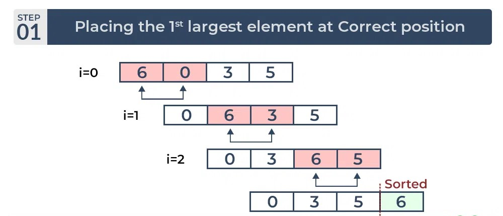
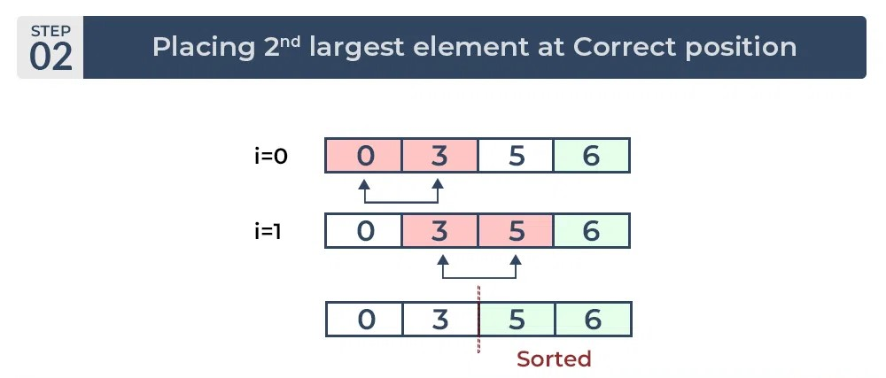
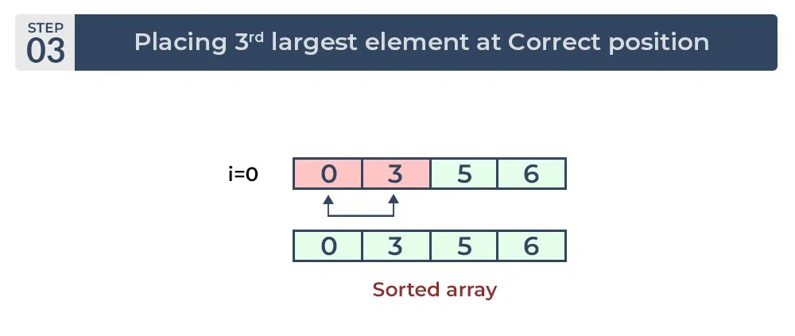

Bubble Sort is a simple sorting algorithm that repeatedly steps through the list, compares adjacent elements, and swaps them if they are in the wrong order. The pass through the list is repeated until no swaps are needed, indicating that the list is sorted. While Bubble Sort is easy to understand and implement, it has a time complexity of O(n^2), making it less efficient for large datasets compared to more advanced sorting algorithms. Despite its limitations, Bubble Sort serves as a basic introduction to sorting algorithms and is often used for educational purposes to illustrate sorting concepts.
  